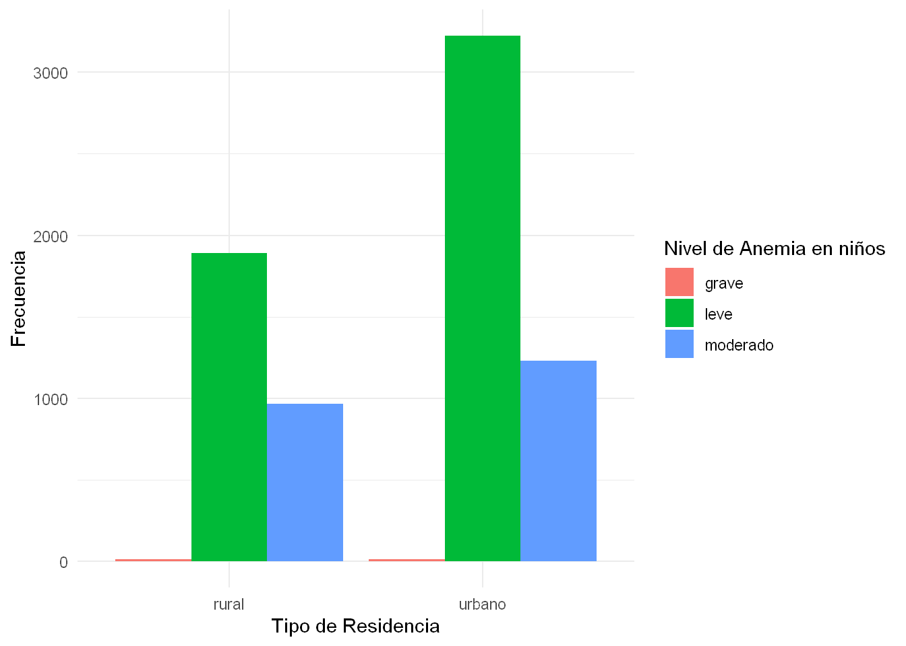
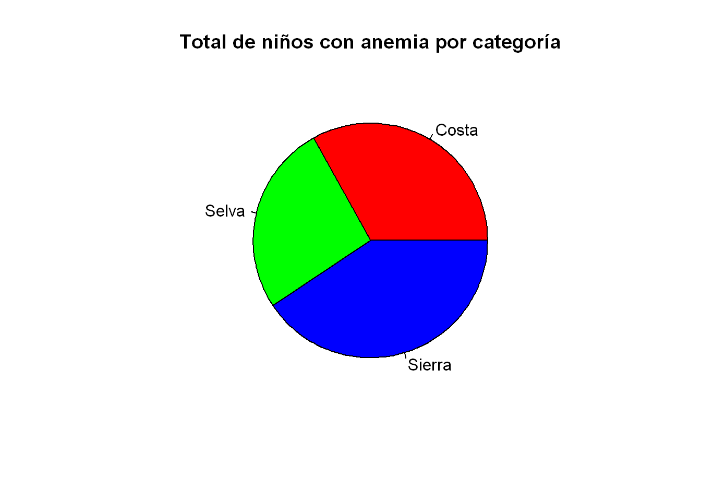

Entrega 1
Análisis de los casos de anemia en infantes y mujeres de 12 a 49 años en el Perú en el año 2022
Introducción
Relevancia
La anemia es un problema de salud pública de gran relevancia en nuestro país. La falta de hemoglobina en la sangre puede tener consecuencias graves, especialmente en niños y madres. Además, la anemia puede afectar el desarrollo físico y cognitivo de los niños y aumentar el riesgo de complicaciones en el embarazo para las madres; por lo tanto, comprender la prevalencia y severidad de la anemia en estos grupos es esencial para abordar adecuadamente este problema de salud en el país.
Objetivos
Describir los casos de anemia y su severidad en niños y mujeres en el Perú en el año 2022.
Analizar el índice de anemia en las diversas regiones del Perú en el año 2022.
Describir las características sociales de los grupos vulnerables (niños y mujeres) a la anemia en el Perú en el año 2022.
Contexto
En el mes de mayo del año 2022, se llevó a cabo en nuestro país la Encuesta Demográfica y de Salud Familiar, un estudio que recopiló datos de una muestra representativa de viviendas en todo el territorio peruano. Este estudio se basó en tres cuestionarios diseñados específicamente: uno dirigido a todos los miembros de cada hogar, otro enfocado en mujeres cuyas edades se encontraban en el rango de 12 a 49 años, y un tercero destinado a individuos de 15 años o más.
En el contexto de esta encuesta, se solicitó a los residentes de los hogares su participación en una evaluación destinada a conocer sus niveles de hemoglobina en la sangre, a la que podían optar por unirse o no.
La totalidad de la información recopilada en esta encuesta se encuentra disponible para consulta por parte de cualquier ciudadano en la base de datos del Instituto Nacional de Estadística e Informática (INEI). Los datos se presentan organizados en módulos temáticos, y nuestro enfoque recae en los análisis de los casos de anemia en infantes y mujeres.
Planificación
La forma en que nos organizamos en hacer este proyecto se puede visualizar en este diagrama de Gantt:
Datos
En esta sección, detallaremos cómo se llevaron a cabo la recolección de datos, la definición de la población y muestra, así como la explicación de las variables de estudio. Además, se proporcionará una visión general de la limpieza de datos realizada.
Recolección de datos
Los datos para este estudio se obtuvieron a partir de la Encuesta Demográfica y de Salud Familiar realizada en mayo de 2022 en el Perú.
Para nuestra investigación, accedimos a la base de datos del Instituto Nacional de Estadística e Informática (INEI) que contenía la información recopilada en esta encuesta. Se seleccionaron módulos específicos que eran relevantes para nuestro estudio sobre la anemia en niños y madres. Estos módulos incluían información sobre las características de los hogares y sus integrantes. El acceso a esta base de datos nos proporcionó una amplia cantidad de información relevante y detallada para nuestros objetivos de investigación.
Población, muestra y muestreo
Población: Son los integrantes del total de viviendas obtenida de los Censos Nacionales 2017: XII de Población y VII de Vivienda y III de Comunidades Indígenas, en el que se registro que en el Perú hay un total de 10 millones 102 mil 849 viviendas particulares.
Muestra: Se tomaron 36650 del total de viviendas.
Muestreo: El muestreo ha sido probabilístico por conglomerados.
Variables
| Nombre | Descripción | Restricción | Tipo de variable |
|---|---|---|---|
| Variable | Estrato | Áreas densamente pobladas | Tipo |
| Variable | Estrato | Áreas densamente pobladas | Tipo |
| Variable | Estrato | Áreas densamente pobladas | Tipo |
| Variable | Estrato | Áreas densamente pobladas | Tipo |
| variable | Estrato | Áreas densamente pobladas | Tipo |
Carga de librerías y datasets
Primero cargamos las librerías necesarias para trabajar
library(readr)
library(dplyr)
library(ggplot2)
library(gt)Cargamos también los datasets.
REC91_raw <- read_csv("../data/raw_data/REC91.csv")
REC0111_raw <- read_csv("../data/raw_data/REC0111.csv")
RECH5_raw <- read_csv("../data/raw_data/RECH5.csv")
REC44_raw <- read_csv("../data/raw_data/REC44.csv")
RECH23_raw <- read_csv("../data/raw_data/RECH23.csv")
RECH0_raw <- read_csv("../data/raw_data/RECH0.csv")Resumen de datos y obtención de variables pertinentes
Realizaremos un resumen de los datos de cada tabla y, además, comenzaremos con nuestro primer criterio de exclusión: seleccionaremos solo las variables pertinentes para nuestro estudio.
Tabla RECH0 - Características del hogar
summary(RECH0_raw) ID1 HHID HV000 HV001
Min. :2022 Min. : 101701 Length:37350 Min. : 1
1st Qu.:2022 1st Qu.:122101376 Class :character 1st Qu.:1221
Median :2022 Median :242109751 Mode :character Median :2421
Mean :2022 Mean :234461137 Mean :2345
3rd Qu.:2022 3rd Qu.:352502651 3rd Qu.:3525
Max. :2022 Max. :434320401 Max. :4343
HV002 HV002A HV003 HV004
Min. : 1.00 Min. :1.000 Min. : 0.000 Min. : 1
1st Qu.: 28.00 1st Qu.:1.000 1st Qu.: 1.000 1st Qu.:1221
Median : 57.00 Median :1.000 Median : 1.000 Median :2421
Mean : 64.59 Mean :1.023 Mean : 1.503 Mean :2345
3rd Qu.: 93.00 3rd Qu.:1.000 3rd Qu.: 2.000 3rd Qu.:3525
Max. :739.00 Max. :5.000 Max. :11.000 Max. :4343
HV007 HV008 HV009 HV010 HV011
Min. :2022 Min. :1465 Min. : 0.000 Min. :0.0000 Min. :0
1st Qu.:2022 1st Qu.:1468 1st Qu.: 2.000 1st Qu.:0.0000 1st Qu.:0
Median :2022 Median :1470 Median : 4.000 Median :1.0000 Median :0
Mean :2022 Mean :1471 Mean : 3.738 Mean :0.9219 Mean :0
3rd Qu.:2022 3rd Qu.:1473 3rd Qu.: 5.000 3rd Qu.:1.0000 3rd Qu.:0
Max. :2023 Max. :1479 Max. :24.000 Max. :7.0000 Max. :0
HV012 HV013 HV014 HV015
Min. : 0.000 Min. : 0.000 Min. :0.0000 Min. :1.00
1st Qu.: 2.000 1st Qu.: 2.000 1st Qu.:0.0000 1st Qu.:1.00
Median : 4.000 Median : 4.000 Median :1.0000 Median :1.00
Mean : 3.682 Mean : 3.559 Mean :0.7135 Mean :1.35
3rd Qu.: 5.000 3rd Qu.: 5.000 3rd Qu.:1.0000 3rd Qu.:1.00
Max. :24.000 Max. :24.000 Max. :6.0000 Max. :9.00
HV017 HV020 HV021 HV023 HV024
Min. :1.000 Min. :0 Min. : 1 Min. : 1.00 Min. : 1.00
1st Qu.:1.000 1st Qu.:0 1st Qu.:1221 1st Qu.: 7.00 1st Qu.: 7.00
Median :1.000 Median :0 Median :2421 Median :14.00 Median :14.00
Mean :1.215 Mean :0 Mean :2345 Mean :13.04 Mean :13.04
3rd Qu.:1.000 3rd Qu.:0 3rd Qu.:3525 3rd Qu.:18.00 3rd Qu.:18.00
Max. :5.000 Max. :0 Max. :4343 Max. :25.00 Max. :25.00
HV025 HV026 HV027 HV028 HV030
Min. :1.000 Min. :0.000 Min. :0 Mode:logical Min. :0
1st Qu.:1.000 1st Qu.:1.000 1st Qu.:0 NA's:37350 1st Qu.:0
Median :1.000 Median :2.000 Median :0 Median :0
Mean :1.338 Mean :1.795 Mean :0 Mean :0
3rd Qu.:2.000 3rd Qu.:3.000 3rd Qu.:0 3rd Qu.:0
Max. :2.000 Max. :3.000 Max. :0 Max. :0
HV031 HV032 HV033 HV035 HV040
Mode:logical Min. :0 Mode:logical Min. :0.0000 Min. : 1
NA's:37350 1st Qu.:0 NA's:37350 1st Qu.:0.0000 1st Qu.: 118
Median :0 Median :1.0000 Median : 474
Mean :0 Mean :0.6399 Mean :1370
3rd Qu.:0 3rd Qu.:1.0000 3rd Qu.:2825
Max. :0 Max. :6.0000 Max. :5032
HV041 HV042 HV043 HV044 UBIGEO
Min. :0.000 Min. :1 Min. :0 Min. :1 Min. : 10101
1st Qu.:1.000 1st Qu.:1 1st Qu.:0 1st Qu.:1 1st Qu.: 70106
Median :1.000 Median :1 Median :0 Median :1 Median :140108
Mean :1.061 Mean :1 Mean :0 Mean :1 Mean :130694
3rd Qu.:1.000 3rd Qu.:1 3rd Qu.:0 3rd Qu.:1 3rd Qu.:180301
Max. :7.000 Max. :1 Max. :0 Max. :1 Max. :250305
HV005 HV022 NCONGLOME CODCCPP
Min. : 0 Min. : 1.0 Min. : 1 Min. : 1.00
1st Qu.: 177786 1st Qu.: 65.0 1st Qu.: 13559 1st Qu.: 1.00
Median : 412358 Median :135.0 Median : 33219 Median : 1.00
Mean : 918367 Mean :125.8 Mean : 460189 Mean : 14.89
3rd Qu.: 958482 3rd Qu.:178.0 3rd Qu.: 45773 3rd Qu.: 14.00
Max. :11133752 Max. :250.0 Max. :4744304 Max. :9999.00
NOMCCPP LONGITUDX LATITUDY
Length:37350 Min. :-81.00 Mode:logical
Class :character 1st Qu.:-77.00 NA's:37350
Mode :character Median :-76.00
Mean :-75.08
3rd Qu.:-73.00
Max. :-69.00 Seleccionamos las variables pertinentes en nuestro análisis, les cambiamos de nombres y, de ser necesario, cambiamos el tipo de dato.
RECH0 <- select(RECH0_raw, HHID, HV009, HV015)
RECH0 <- rename(RECH0,
cuestionario_hogar_id = HHID,
personas_en_el_hogar = HV009,
estado_entrevista = HV015)
RECH0$cuestionario_hogar_id <- as.character(RECH0$cuestionario_hogar_id)
RECH0$estado_entrevista <- as.character(RECH0$estado_entrevista)
str(RECH0)tibble [37,350 × 3] (S3: tbl_df/tbl/data.frame)
$ cuestionario_hogar_id: chr [1:37350] "101701" "102201" "105201" "105301" ...
$ personas_en_el_hogar : num [1:37350] 4 3 5 4 2 5 5 0 3 4 ...
$ estado_entrevista : chr [1:37350] "1" "1" "1" "1" ...Tabla REC0111 - Datos básicos del MEF
Relación entre identificación del cuestionario individual e identificación del cuestionario del hogar.
summary(REC0111_raw) ID1 CASEID HHID V001
Min. :2022 Length:38105 Min. : 102201 Min. : 1
1st Qu.:2022 Class :character 1st Qu.:123218501 1st Qu.:1232
Median :2022 Mode :character Median :245603501 Median :2456
Mean :2022 Mean :236102024 Mean :2361
3rd Qu.:2022 3rd Qu.:354300101 3rd Qu.:3543
Max. :2022 Max. :434316101 Max. :4343
V002 V003 V004 V007 V008
Min. : 1.00 Min. : 1.000 Min. : 1 Min. :2022 Min. :1465
1st Qu.: 29.00 1st Qu.: 2.000 1st Qu.:1232 1st Qu.:2022 1st Qu.:1468
Median : 58.00 Median : 2.000 Median :2456 Median :2022 Median :1471
Mean : 65.84 Mean : 2.601 Mean :2361 Mean :2022 Mean :1471
3rd Qu.: 95.00 3rd Qu.: 3.000 3rd Qu.:3543 3rd Qu.:2022 3rd Qu.:1473
Max. :739.00 Max. :20.000 Max. :4343 Max. :2023 Max. :1479
V009 V010 V011 V012 V013
Min. : 1.000 Min. :1972 Min. : 866 Min. :12.00 Min. :0.000
1st Qu.: 4.000 1st Qu.:1985 1st Qu.:1027 1st Qu.:20.00 1st Qu.:2.000
Median : 7.000 Median :1993 Median :1119 Median :29.00 Median :3.000
Mean : 6.515 Mean :1993 Mean :1120 Mean :28.76 Mean :3.339
3rd Qu.: 9.000 3rd Qu.:2001 3rd Qu.:1220 3rd Qu.:37.00 3rd Qu.:5.000
Max. :12.000 Max. :2010 Max. :1332 Max. :49.00 Max. :7.000
NA's :2318 NA's :2318 NA's :2318 NA's :2318 NA's :2318
V014 V015 V017 V018 V019
Min. :1 Min. :1.000 Min. :1405 Min. : 0.0 Min. : 0.00
1st Qu.:1 1st Qu.:1.000 1st Qu.:1405 1st Qu.:11.0 1st Qu.:63.00
Median :1 Median :1.000 Median :1405 Median :14.0 Median :66.00
Mean :1 Mean :1.152 Mean :1405 Mean :13.5 Mean :62.57
3rd Qu.:1 3rd Qu.:1.000 3rd Qu.:1405 3rd Qu.:17.0 3rd Qu.:69.00
Max. :1 Max. :7.000 Max. :1405 Max. :20.0 Max. :75.00
NA's :2318
V019A V020 V021 V023 V024
Min. :0.000 Min. :0 Min. : 1 Min. : 1.00 Min. : 1.00
1st Qu.:4.000 1st Qu.:0 1st Qu.:1232 1st Qu.: 7.00 1st Qu.: 7.00
Median :4.000 Median :0 Median :2456 Median :14.00 Median :14.00
Mean :3.757 Mean :0 Mean :2361 Mean :13.22 Mean :13.22
3rd Qu.:4.000 3rd Qu.:0 3rd Qu.:3543 3rd Qu.:19.00 3rd Qu.:19.00
Max. :4.000 Max. :0 Max. :4343 Max. :25.00 Max. :25.00
V025 V026 V027 V028 V029
Min. :1.000 Min. :0.000 Min. :1.000 Min. :0 Min. :0
1st Qu.:1.000 1st Qu.:1.000 1st Qu.:1.000 1st Qu.:0 1st Qu.:0
Median :1.000 Median :2.000 Median :1.000 Median :0 Median :0
Mean :1.304 Mean :1.733 Mean :1.696 Mean :0 Mean :0
3rd Qu.:2.000 3rd Qu.:3.000 3rd Qu.:2.000 3rd Qu.:0 3rd Qu.:0
Max. :2.000 Max. :3.000 Max. :5.000 Max. :0 Max. :0
V030 V031 V032 V033 V034
Min. :0 Mode:logical Min. :0 Mode:logical Min. : 0.000
1st Qu.:0 NA's:38105 1st Qu.:0 NA's:38105 1st Qu.: 1.000
Median :0 Median :0 Median : 1.000
Mean :0 Mean :0 Mean : 1.441
3rd Qu.:0 3rd Qu.:0 3rd Qu.: 1.000
Max. :0 Max. :0 Max. :21.000
NA's :17173
V040 V042 V043 V044 V000
Min. : 1 Min. :1 Min. :0 Min. :0.0000 Length:38105
1st Qu.: 107 1st Qu.:1 1st Qu.:0 1st Qu.:0.0000 Class :character
Median : 399 Median :1 Median :0 Median :1.0000 Mode :character
Mean :1254 Mean :1 Mean :0 Mean :0.7862
3rd Qu.:2679 3rd Qu.:1 3rd Qu.:0 3rd Qu.:1.0000
Max. :5032 Max. :1 Max. :0 Max. :3.0000
Q105DD V101 V102 V103
Min. : 1.00 Min. : 1.00 Min. :1.000 Min. :0.000
1st Qu.: 8.00 1st Qu.: 7.00 1st Qu.:1.000 1st Qu.:0.000
Median :15.00 Median :14.00 Median :1.000 Median :2.000
Mean :15.58 Mean :13.25 Mean :1.316 Mean :1.618
3rd Qu.:23.00 3rd Qu.:19.00 3rd Qu.:2.000 3rd Qu.:3.000
Max. :31.00 Max. :25.00 Max. :2.000 Max. :4.000
NA's :2318 NA's :2318 NA's :2318 NA's :2318
V104 V105 V106 V107 V113
Min. : 0.00 Min. :0.000 Min. :0.00 Min. :1.000 Min. :11.00
1st Qu.: 8.00 1st Qu.:1.000 1st Qu.:2.00 1st Qu.:3.000 1st Qu.:11.00
Median :95.00 Median :2.000 Median :2.00 Median :5.000 Median :11.00
Mean :53.02 Mean :1.717 Mean :2.06 Mean :3.891 Mean :25.96
3rd Qu.:95.00 3rd Qu.:3.000 3rd Qu.:3.00 3rd Qu.:5.000 3rd Qu.:41.00
Max. :96.00 Max. :4.000 Max. :3.00 Max. :6.000 Max. :97.00
NA's :2318 NA's :20397 NA's :2318 NA's :2760 NA's :2318
V115 V116 V119 V120
Min. : 1.0 Min. :11.00 Min. :0.000 Min. :0.0000
1st Qu.:996.0 1st Qu.:11.00 1st Qu.:1.000 1st Qu.:0.0000
Median :996.0 Median :11.00 Median :1.000 Median :1.0000
Mean :823.2 Mean :17.19 Mean :1.039 Mean :0.6758
3rd Qu.:996.0 3rd Qu.:23.00 3rd Qu.:1.000 3rd Qu.:1.0000
Max. :998.0 Max. :97.00 Max. :7.000 Max. :7.0000
NA's :2318 NA's :2318 NA's :2318 NA's :2318
V121 V122 V123 V124
Min. :0.0000 Min. :0.0000 Min. :0.0000 Min. :0.0000
1st Qu.:1.0000 1st Qu.:0.0000 1st Qu.:0.0000 1st Qu.:0.0000
Median :1.0000 Median :1.0000 Median :0.0000 Median :0.0000
Mean :0.8784 Mean :0.5941 Mean :0.2143 Mean :0.3698
3rd Qu.:1.0000 3rd Qu.:1.0000 3rd Qu.:0.0000 3rd Qu.:1.0000
Max. :7.0000 Max. :7.0000 Max. :7.0000 Max. :7.0000
NA's :2318 NA's :2318 NA's :2318 NA's :2318
V125 V127 V128 V129 V130
Min. :0.0000 Min. :11.00 Min. :11 Min. :11.00 Mode:logical
1st Qu.:0.0000 1st Qu.:11.00 1st Qu.:21 1st Qu.:31.00 NA's:38105
Median :0.0000 Median :34.00 Median :31 Median :34.00
Mean :0.1972 Mean :28.11 Mean :27 Mean :33.42
3rd Qu.:0.0000 3rd Qu.:34.00 3rd Qu.:31 3rd Qu.:34.00
Max. :7.0000 Max. :97.00 Max. :97 Max. :97.00
NA's :2318 NA's :2974 NA's :2974 NA's :2974
V131 V133 V134 V135
Min. : 1.000 Min. : 0.00 Min. :0.000 Min. :1.000
1st Qu.:10.000 1st Qu.: 7.00 1st Qu.:1.000 1st Qu.:1.000
Median :10.000 Median :11.00 Median :2.000 Median :1.000
Mean : 9.179 Mean :10.04 Mean :1.776 Mean :1.015
3rd Qu.:10.000 3rd Qu.:12.00 3rd Qu.:3.000 3rd Qu.:1.000
Max. :12.000 Max. :18.00 Max. :3.000 Max. :2.000
NA's :2318 NA's :2318 NA's :2318 NA's :2318
V136 V137 V138 V139
Min. : 1.000 Min. :0.0000 Min. :0.000 Min. : 1.00
1st Qu.: 4.000 1st Qu.:1.0000 1st Qu.:1.000 1st Qu.: 7.00
Median : 5.000 Median :1.0000 Median :1.000 Median :15.00
Mean : 4.906 Mean :0.9506 Mean :1.471 Mean :14.54
3rd Qu.: 6.000 3rd Qu.:1.0000 3rd Qu.:2.000 3rd Qu.:19.00
Max. :24.000 Max. :6.0000 Max. :7.000 Max. :97.00
NA's :2318 NA's :2318 NA's :2318 NA's :2318
V140 V141 V149 V150
Min. :1.000 Min. :0.000 Min. :0.000 Min. : 1.000
1st Qu.:1.000 1st Qu.:1.000 1st Qu.:3.000 1st Qu.: 2.000
Median :1.000 Median :2.000 Median :4.000 Median : 2.000
Mean :1.399 Mean :1.849 Mean :3.522 Mean : 2.779
3rd Qu.:2.000 3rd Qu.:3.000 3rd Qu.:5.000 3rd Qu.: 3.000
Max. :7.000 Max. :7.000 Max. :5.000 Max. :15.000
NA's :2318 NA's :2318 NA's :2318 NA's :2318
V151 V152 V153 AWFACTT AWFACTU
Min. :1.000 Min. :15.00 Min. :0.0000 Min. :100 Min. :100
1st Qu.:1.000 1st Qu.:33.00 1st Qu.:0.0000 1st Qu.:100 1st Qu.:100
Median :1.000 Median :41.00 Median :0.0000 Median :100 Median :100
Mean :1.311 Mean :42.33 Mean :0.1707 Mean :100 Mean :100
3rd Qu.:2.000 3rd Qu.:49.00 3rd Qu.:0.0000 3rd Qu.:100 3rd Qu.:100
Max. :2.000 Max. :97.00 Max. :7.0000 Max. :100 Max. :100
NA's :2318 NA's :2318 NA's :2318 NA's :2318 NA's :2318
AWFACTR AWFACTE AWFACTW V155 V156
Min. :100 Min. :100 Min. :100 Min. :0.000 Min. :0.00
1st Qu.:100 1st Qu.:100 1st Qu.:100 1st Qu.:2.000 1st Qu.:0.00
Median :100 Median :100 Median :100 Median :2.000 Median :0.00
Mean :100 Mean :100 Mean :100 Mean :1.917 Mean :0.13
3rd Qu.:100 3rd Qu.:100 3rd Qu.:100 3rd Qu.:2.000 3rd Qu.:0.00
Max. :100 Max. :100 Max. :100 Max. :4.000 Max. :1.00
NA's :2318 NA's :2318 NA's :2318 NA's :2318 NA's :30442
V157 V158 V159 V160
Min. :0.0000 Min. :0.000 Min. :0.000 Min. :0.000
1st Qu.:0.0000 1st Qu.:1.000 1st Qu.:1.000 1st Qu.:0.000
Median :1.0000 Median :1.000 Median :1.000 Median :0.000
Mean :0.9799 Mean :1.423 Mean :1.752 Mean :0.222
3rd Qu.:1.0000 3rd Qu.:3.000 3rd Qu.:3.000 3rd Qu.:0.000
Max. :3.0000 Max. :3.000 Max. :3.000 Max. :7.000
NA's :2318 NA's :2318 NA's :2318 NA's :4420
V161 V166 V167 V168 ML101
Min. : 1.000 Min. : 0.0 Mode:logical Mode:logical Mode:logical
1st Qu.: 2.000 1st Qu.:994.0 NA's:38105 NA's:38105 NA's:38105
Median : 2.000 Median :994.0
Mean : 5.529 Mean :778.2
3rd Qu.: 8.000 3rd Qu.:994.0
Max. :97.000 Max. :995.0
NA's :2318 NA's :2857
QD333_1 QD333_2 QD333_3 QD333_4
Min. :1.000 Min. :1.000 Min. :1.000 Min. :1.000
1st Qu.:2.000 1st Qu.:2.000 1st Qu.:2.000 1st Qu.:2.000
Median :2.000 Median :2.000 Median :2.000 Median :2.000
Mean :1.997 Mean :1.998 Mean :1.997 Mean :1.998
3rd Qu.:2.000 3rd Qu.:2.000 3rd Qu.:2.000 3rd Qu.:2.000
Max. :2.000 Max. :2.000 Max. :2.000 Max. :2.000
NA's :2130 NA's :2130 NA's :2130 NA's :2130
QD333_5 QD333_6 V190 V191
Min. :1.000 Min. :1.000 Min. :1.000 Length:38105
1st Qu.:2.000 1st Qu.:2.000 1st Qu.:1.000 Class :character
Median :2.000 Median :2.000 Median :2.000 Mode :character
Mean :1.994 Mean :1.995 Mean :2.563
3rd Qu.:2.000 3rd Qu.:2.000 3rd Qu.:4.000
Max. :2.000 Max. :2.000 Max. :5.000
NA's :2130 NA's :2130
UBIGEO V022 V005 mujeres12a49
Mode:logical Mode:logical Mode:logical Mode:logical
NA's:38105 NA's:38105 NA's:38105 NA's:38105
Seleccionamos las variables pertinentes en nuestro análisis, les cambiamos de nombres y, de ser necesario, cambiamos el tipo de dato.
REC0111 <- select(REC0111_raw, CASEID, HHID, V015, V024, V102)
REC0111 <- rename(REC0111,
cuestionario_individual_id = CASEID,
cuestionario_hogar_id = HHID,
estado_entrevista = V015,
region = V024,
tipo_de_residencia = V102)
REC0111$cuestionario_individual_id <- as.character(REC0111$cuestionario_individual_id)
REC0111$cuestionario_hogar_id <- as.character(REC0111$cuestionario_hogar_id)
REC0111$region <- as.character(REC0111$region)
REC0111$tipo_de_residencia <- as.character(REC0111$tipo_de_residencia)
region_names <- c("1" = "Amazonas", "2" = "Ancash", "3" = "Apurimac", "4" = "Arequipa",
"5" = "Ayacucho", "6" = "Cajamarca", "7" = "Callao", "8" = "Cusco",
"9" = "Huancavelica", "10" = "Huanuco", "11" = "Ica", "12" = "Junin",
"13" = "La Libertad", "14" = "Lambayeque", "15" = "Lima",
"16" = "Loreto", "17" = "Madre de Dios", "18" = "Moquegua",
"19" = "Pasco", "20" = "Piura", "21" = "Puno",
"22" = "San Martin", "23" = "Tacna",
"24" = "Tumbes", "25" = "Ucayali")
REC0111$region <- region_names[as.character(REC0111$region)]
str(REC0111)tibble [38,105 × 5] (S3: tbl_df/tbl/data.frame)
$ cuestionario_individual_id: chr [1:38105] "000102201 2" "000105201 2" "000105201 3" "000105201 4" ...
$ cuestionario_hogar_id : chr [1:38105] "102201" "105201" "105201" "105201" ...
$ estado_entrevista : num [1:38105] 1 1 1 1 1 1 1 1 1 1 ...
$ region : Named chr [1:38105] "Amazonas" "Amazonas" "Amazonas" "Amazonas" ...
..- attr(*, "names")= chr [1:38105] "1" "1" "1" "1" ...
$ tipo_de_residencia : chr [1:38105] "1" "1" "1" "1" ...Asignamos la categoría que corresponde a cada número para la variable tipo de residencia.
REC0111$tipo_de_residencia[REC0111$tipo_de_residencia %in% c(1)] <- "urbano"
REC0111$tipo_de_residencia[REC0111$tipo_de_residencia %in% c(2)] <- "rural"Tabla RECH5 - Peso y talla (anemia)
Características de las mujeres de 12 a 49 años.
summary(RECH5_raw) ID1 HHID HA0 HA1
Min. :2022 Length:39641 Min. : 1.000 Min. :12.00
1st Qu.:2022 Class :character 1st Qu.: 2.000 1st Qu.:20.00
Median :2022 Mode :character Median : 2.000 Median :29.00
Mean :2022 Mean : 2.605 Mean :28.81
3rd Qu.:2022 3rd Qu.: 3.000 3rd Qu.:37.00
Max. :2022 Max. :20.000 Max. :49.00
HA2 HA3 HA4 HA5 HA6
Min. : 241 Min. :1266 Min. : 0 Min. :-579.0 Min. : 7892
1st Qu.: 542 1st Qu.:1492 1st Qu.: 98 1st Qu.:-233.0 1st Qu.: 9138
Median : 629 Median :1531 Median : 483 Median :-166.0 Median : 9383
Mean :1371 Mean :2199 Mean :1765 Mean : 634.8 Mean :16564
3rd Qu.: 737 3rd Qu.:1575 3rd Qu.:1867 3rd Qu.: -89.0 3rd Qu.: 9664
Max. :9999 Max. :9999 Max. :9999 Max. :9999.0 Max. :99999
HA11 HA12 HA12A HA12B
Min. :-396.0 Min. : 5612 Min. : 6491 Min. : 7627
1st Qu.: -20.0 1st Qu.: 9718 1st Qu.:11187 1st Qu.:12835
Median : 69.0 Median :11052 Median :12904 Median :14862
Mean : 881.1 Mean :18414 Mean :20083 Mean :21859
3rd Qu.: 165.0 3rd Qu.:12733 3rd Qu.:15000 3rd Qu.:17289
Max. :9999.0 Max. :99999 Max. :99999 Max. :99999
HA13 HA32 HA33 HA35
Min. :0.0000 Min. : 866 Min. :1.000 Min. : 0.000
1st Qu.:0.0000 1st Qu.:1026 1st Qu.:1.000 1st Qu.: 0.000
Median :0.0000 Median :1119 Median :1.000 Median : 0.000
Mean :0.2921 Mean :1119 Mean :1.351 Mean : 6.969
3rd Qu.:0.0000 3rd Qu.:1219 3rd Qu.:1.000 3rd Qu.: 0.000
Max. :6.0000 Max. :1332 Max. :6.000 Max. :99.000
HA40 HA41 HA50 HA51 HA52
Min. :1271 Min. : 897 Min. :1.000 Min. : 0.00 Min. :1.000
1st Qu.:2343 1st Qu.:1532 1st Qu.:2.000 1st Qu.: 1.00 1st Qu.:1.000
Median :2703 Median :1774 Median :2.000 Median : 2.00 Median :1.000
Mean :3272 Mean :2421 Mean :1.822 Mean : 1.88 Mean :1.082
3rd Qu.:3134 3rd Qu.:2063 3rd Qu.:2.000 3rd Qu.: 2.00 3rd Qu.:1.000
Max. :9999 Max. :9999 Max. :2.000 Max. :12.00 Max. :2.000
NA's :32599
HA53 HA54 HA55 HA56
Min. : 50.0 Min. :0.0000 Min. :0.0000 Min. : 33.0
1st Qu.:125.0 1st Qu.:0.0000 1st Qu.:0.0000 1st Qu.:121.0
Median :135.0 Median :0.0000 Median :0.0000 Median :129.0
Mean :205.5 Mean :0.7628 Mean :0.3012 Mean :198.4
3rd Qu.:150.0 3rd Qu.:0.0000 3rd Qu.:0.0000 3rd Qu.:137.0
Max. :999.0 Max. :9.0000 Max. :6.0000 Max. :999.0
HA57 HA58 HA60 HA61 HA62
Min. :1.000 Mode:logical Mode:logical Mode:logical Mode:logical
1st Qu.:4.000 NA's:39641 NA's:39641 NA's:39641 NA's:39641
Median :4.000
Mean :4.174
3rd Qu.:4.000
Max. :9.000
HA63 HA64 HA65 HA66 HA67
Mode:logical Mode:logical Min. :1.00 Min. :0.000 Min. : 0.000
NA's:39641 NA's:39641 1st Qu.:1.00 1st Qu.:2.000 1st Qu.: 3.000
Median :1.00 Median :2.000 Median : 5.000
Mean :1.16 Mean :1.923 Mean : 3.939
3rd Qu.:1.00 3rd Qu.:2.000 3rd Qu.: 5.000
Max. :7.00 Max. :8.000 Max. :98.000
NA's :572
HA68 HA69
Min. :0.000 Mode:logical
1st Qu.:2.000 NA's:39641
Median :2.000
Mean :1.923
3rd Qu.:2.000
Max. :8.000
Seleccionamos las variables pertinentes en nuestro análisis, les cambiamos de nombres y, de ser necesario, cambiamos el tipo de dato.
RECH5 <- select(RECH5_raw, HHID, HA1, HA2, HA3, HA13, HA53, HA54, HA55, HA56, HA57, HA66)
RECH5 <- rename(RECH5,
cuestionario_individual_id = HHID,
edad = HA1,
peso = HA2,
talla = HA3,
estado_medicion = HA13,
hemoglobina = HA53,
is_embarazada = HA54,
estado_medicion_hemoglobina = HA55,
hemoglobina_ajustada_latitud = HA56,
anemia = HA57,
nivel_educativo = HA66)
RECH5$estado_medicion <- as.character(RECH5$estado_medicion)
RECH5$is_embarazada <- as.character(RECH5$is_embarazada)
RECH5$estado_medicion_hemoglobina <- as.character(RECH5$estado_medicion_hemoglobina)
RECH5$anemia <- as.character(RECH5$anemia)
RECH5$nivel_educativo <- as.character(RECH5$nivel_educativo)
str(RECH5)tibble [39,641 × 11] (S3: tbl_df/tbl/data.frame)
$ cuestionario_individual_id : chr [1:39641] "000102201" "000105201" "000105201" "000105201" ...
$ edad : num [1:39641] 22 44 20 15 34 15 38 22 33 26 ...
$ peso : num [1:39641] 659 626 583 598 676 456 539 558 775 624 ...
$ talla : num [1:39641] 1581 1532 1615 1585 1485 ...
$ estado_medicion : chr [1:39641] "0" "0" "0" "0" ...
$ hemoglobina : num [1:39641] 134 137 155 144 161 141 153 154 131 146 ...
$ is_embarazada : chr [1:39641] "0" "0" "0" "0" ...
$ estado_medicion_hemoglobina : chr [1:39641] "0" "0" "0" "0" ...
$ hemoglobina_ajustada_latitud: num [1:39641] 123 126 144 133 150 130 142 143 120 135 ...
$ anemia : chr [1:39641] "4" "4" "4" "4" ...
$ nivel_educativo : chr [1:39641] "3" "3" "3" "2" ...Asignamos la categoría que corresponde a cada número para la variable anemia.
RECH5$anemia[RECH5$anemia %in% c(1)] <- "grave"
RECH5$anemia[RECH5$anemia %in% c(2)] <- "moderado"
RECH5$anemia[RECH5$anemia %in% c(3)] <- "leve"
RECH5$anemia[RECH5$anemia %in% c(4)] <- "sin_anemia"Asignamos la categoría que corresponde a cada número para la variable nivel_educativo.
RECH5$nivel_educativo[RECH5$nivel_educativo %in% c(0)] <- "sin_educacion"
RECH5$nivel_educativo[RECH5$nivel_educativo %in% c(1)] <- "primaria"
RECH5$nivel_educativo[RECH5$nivel_educativo %in% c(2)] <- "secundaria"
RECH5$nivel_educativo[RECH5$nivel_educativo %in% c(3)] <- "superior"
RECH5$nivel_educativo[RECH5$nivel_educativo %in% c(8)] <- "no_sabe"Cambiamos las unidades de talla y peso.
RECH5 <- mutate(RECH5,
# Convertimos de centímetros a metros
talla = talla / 10,
# Convertimos de gramos a kilogramos
peso = peso / 10)Tabla REC44 - Peso y talla (anemia)
Características de los infantes de 0 a 59 meses (5 años aproximadamente) seleccionados por hogar.
summary(REC44_raw) ID1 CASEID HWIDX HW1
Min. :2022 Length:21611 Min. :1.000 Min. : 0.00
1st Qu.:2022 Class :character 1st Qu.:1.000 1st Qu.:15.00
Median :2022 Mode :character Median :1.000 Median :30.00
Mean :2022 Mean :1.133 Mean :30.34
3rd Qu.:2022 3rd Qu.:1.000 3rd Qu.:45.00
Max. :2022 Max. :4.000 Max. :59.00
NA's :405
HW2 HW3 HW4 HW5
Min. : 17.0 Min. : 427.0 Min. : 0 Min. :-506.0
1st Qu.:100.0 1st Qu.: 764.0 1st Qu.: 979 1st Qu.:-129.0
Median :129.0 Median : 892.0 Median :2692 Median : -62.0
Mean :140.7 Mean : 993.7 Mean :3369 Mean : 114.4
3rd Qu.:157.0 3rd Qu.: 986.0 3rd Qu.:5255 3rd Qu.: 6.0
Max. :999.0 Max. :9999.0 Max. :9999 Max. :9999.0
NA's :405 NA's :405 NA's :405 NA's :405
HW6 HW7 HW8 HW9 HW10
Min. : 8004 Min. : 0 Min. :-430.0 Min. : 5022 Min. : 1
1st Qu.: 9493 1st Qu.:1610 1st Qu.: -99.0 1st Qu.: 8931 1st Qu.:3597
Median : 9759 Median :4020 Median : -25.0 Median : 9729 Median :5976
Mean :11350 Mean :4442 Mean : 158.2 Mean :11467 Mean :5851
3rd Qu.:10025 3rd Qu.:7061 3rd Qu.: 54.0 3rd Qu.:10689 3rd Qu.:8295
Max. :99999 Max. :9999 Max. :9999.0 Max. :99999 Max. :9999
NA's :405 NA's :405 NA's :405 NA's :405 NA's :405
HW11 HW12 HW13 HW15
Min. :-381.0 Min. : 6678 Min. :0.0000 Min. :1.000
1st Qu.: -36.0 1st Qu.: 9685 1st Qu.:0.0000 1st Qu.:1.000
Median : 25.0 Median :10249 Median :0.0000 Median :2.000
Mean : 209.4 Mean :11963 Mean :0.1315 Mean :1.617
3rd Qu.: 95.0 3rd Qu.:10970 3rd Qu.:0.0000 3rd Qu.:2.000
Max. :9999.0 Max. :99999 Max. :7.0000 Max. :2.000
NA's :405 NA's :405 NA's :688
HW16 HW17 HW18 HW19
Min. : 1.00 Min. : 1.00 Min. : 1.000 Min. :2022
1st Qu.: 8.00 1st Qu.: 8.00 1st Qu.: 4.000 1st Qu.:2022
Median :16.00 Median :15.00 Median : 6.000 Median :2022
Mean :15.65 Mean :15.19 Mean : 6.574 Mean :2022
3rd Qu.:23.00 3rd Qu.:22.00 3rd Qu.: 9.000 3rd Qu.:2022
Max. :31.00 Max. :31.00 Max. :12.000 Max. :2023
NA's :405 NA's :405 NA's :405 NA's :405
HW51 HW52 HW53 HW55
Min. : 0.000 Min. :1.000 Min. : 54.0 Min. :0.0000
1st Qu.: 2.000 1st Qu.:1.000 1st Qu.:111.0 1st Qu.:0.0000
Median : 2.000 Median :1.000 Median :120.0 Median :0.0000
Mean : 2.204 Mean :1.019 Mean :171.3 Mean :0.5004
3rd Qu.: 2.000 3rd Qu.:1.000 3rd Qu.:132.0 3rd Qu.:0.0000
Max. :20.000 Max. :2.000 Max. :999.0 Max. :9.0000
NA's :1252 NA's :1252 NA's :405
HW56 HW57 HW58 HW70
Min. : 44.0 Min. :1.000 Mode:logical Min. :-560.00
1st Qu.: 106.0 1st Qu.:3.000 NA's:21611 1st Qu.:-147.00
Median : 114.0 Median :4.000 Median : -78.00
Mean : 687.3 Mean :3.838 Mean : 87.34
3rd Qu.: 121.0 3rd Qu.:4.000 3rd Qu.: -9.00
Max. :9999.0 Max. :9.000 Max. :9999.00
NA's :405 NA's :405 NA's :405
HW71 HW72 HW73
Min. :-529.0 Min. :-497.0 Min. :-497.0
1st Qu.: -76.0 1st Qu.: -10.0 1st Qu.: -2.0
Median : -8.0 Median : 52.0 Median : 60.0
Mean : 161.2 Mean : 222.2 Mean : 228.6
3rd Qu.: 64.0 3rd Qu.: 122.0 3rd Qu.: 126.0
Max. :9999.0 Max. :9999.0 Max. :9999.0
NA's :405 NA's :405 NA's :405 Seleccionamos las variables pertinentes en nuestro análisis, les cambiamos de nombres y, de ser necesario, cambiamos el tipo de dato.
REC44 <- select(REC44_raw, CASEID, HW1, HW2, HW3, HW13, HW53, HW55, HW56, HW57)
REC44 <- rename(REC44,
cuestionario_individual_id = CASEID,
edad = HW1,
peso = HW2,
talla = HW3,
estado_medicion = HW13,
hemoglobina = HW53,
estado_medicion_hemoglobina = HW55,
hemoglobina_ajustada_latitud = HW56,
anemia = HW57)
REC44$estado_medicion <- as.character(REC44$estado_medicion)
REC44$estado_medicion_hemoglobina <- as.character(REC44$estado_medicion_hemoglobina)
REC44$anemia <- as.character(REC44$anemia)
str(REC44)tibble [21,611 × 9] (S3: tbl_df/tbl/data.frame)
$ cuestionario_individual_id : chr [1:21611] "000102201 2" "000105201 2" "000105301 1" "000108501 2" ...
$ edad : num [1:21611] 31 56 28 50 58 36 57 43 56 3 ...
$ peso : num [1:21611] 158 161 122 182 230 999 999 180 221 56 ...
$ talla : num [1:21611] 941 1055 860 1050 1120 ...
$ estado_medicion : chr [1:21611] "0" "0" "0" "0" ...
$ hemoglobina : num [1:21611] 127 125 135 123 132 999 999 122 130 999 ...
$ estado_medicion_hemoglobina : chr [1:21611] "0" "0" "0" "0" ...
$ hemoglobina_ajustada_latitud: num [1:21611] 116 114 124 112 121 ...
$ anemia : chr [1:21611] "4" "4" "4" "4" ...Asignamos la categoría que corresponde a cada número para la variable anemia.
REC44$anemia[REC44$anemia %in% c(1)] <- "grave"
REC44$anemia[REC44$anemia %in% c(2)] <- "moderado"
REC44$anemia[REC44$anemia %in% c(3)] <- "leve"
REC44$anemia[REC44$anemia %in% c(4)] <- "sin_anemia"Cambiamos las unidades de talla y peso.
REC44 <- mutate(REC44,
# Agregamos el decimal mencionado en el diccionario.
talla = talla / 10,
# Agregamos el decimal mencionado en el diccionario.
peso = peso / 10)Tabla RECH23 - Características del hogar de los participantes
Estos contienen las características del modo de vida de los que respondieron la encuesta.
RECH23 <- select(RECH23_raw, HHID, HV201, HV205, HV206, HV226, SH70, HV270)
RECH23 <- rename(RECH23,
cuestionario_hogar_id = HHID,
fuente_agua = HV201,
servicio_higienico = HV205,
electricidad = HV206,
combustible_cocina = HV226,
alumbrado = SH70,
indice_riqueza = HV270)
RECH23$cuestionario_hogar_id <- as.character(RECH23$cuestionario_hogar_id)
RECH23$fuente_agua <- as.character(RECH23$fuente_agua)
RECH23$servicio_higienico <- as.character(RECH23$servicio_higienico)
RECH23$electricidad <- as.character(RECH23$electricidad)
RECH23$combustible_cocina <- as.character(RECH23$combustible_cocina)
RECH23$alumbrado <- as.character(RECH23$alumbrado)
RECH23$indice_riqueza <- as.character(RECH23$indice_riqueza)
str(RECH23)tibble [37,350 × 7] (S3: tbl_df/tbl/data.frame)
$ cuestionario_hogar_id: chr [1:37350] "101701" "102201" "105201" "105301" ...
$ fuente_agua : chr [1:37350] "11" "11" "11" "11" ...
$ servicio_higienico : chr [1:37350] "11" "11" "11" "11" ...
$ electricidad : chr [1:37350] "1" "1" "1" "1" ...
$ combustible_cocina : chr [1:37350] "2" "2" "2" "2" ...
$ alumbrado : chr [1:37350] "1" "1" "1" "1" ...
$ indice_riqueza : chr [1:37350] "4" "5" "4" "3" ...Asignamos la categoría que corresponde a cada número para la variable fuente_agua
RECH23$fuente_agua[RECH23$fuente_agua %in% c(11)] <- "dentro_vivienda"
RECH23$fuente_agua[RECH23$fuente_agua %in% c(12)] <- "fuera_vivienda"
RECH23$fuente_agua[RECH23$fuente_agua %in% c(13)] <- "pilon/grifo_publico"
RECH23$fuente_agua[RECH23$fuente_agua %in% c(21)] <- "pozo_vivienda"
RECH23$fuente_agua[RECH23$fuente_agua %in% c(22)] <- "pozo_publico"
RECH23$fuente_agua[RECH23$fuente_agua %in% c(41)] <- "manantial"
RECH23$fuente_agua[RECH23$fuente_agua %in% c(43)] <- "rio/acequia/laguna"
RECH23$fuente_agua[RECH23$fuente_agua %in% c(51)] <- "agua_lluvia"
RECH23$fuente_agua[RECH23$fuente_agua %in% c(61)] <- "cisterna"
RECH23$fuente_agua[RECH23$fuente_agua %in% c(71)] <- "agua_embotellada"
RECH23$fuente_agua[RECH23$fuente_agua %in% c(96)] <- "otro"Asignamos la categoría que corresponde a cada número para la variable servicio_higienico
RECH23$servicio_higienico[RECH23$servicio_higienico %in% c(11)] <- "dentro_vivienda"
RECH23$servicio_higienico[RECH23$servicio_higienico %in% c(12)] <- "fuera_vivienda"
RECH23$servicio_higienico[RECH23$servicio_higienico %in% c(21)] <- "letrina_mejorada_ventilada"
RECH23$servicio_higienico[RECH23$servicio_higienico %in% c(22)] <- "pozo_septico"
RECH23$servicio_higienico[RECH23$servicio_higienico %in% c(23)] <- "letrina"
RECH23$servicio_higienico[RECH23$servicio_higienico %in% c(24)] <- "letrina_mejorada_flotante"
RECH23$servicio_higienico[RECH23$servicio_higienico %in% c(31)] <- "rio/acequia/canal"
RECH23$servicio_higienico[RECH23$servicio_higienico %in% c(32)] <- "campo/matorral"
RECH23$servicio_higienico[RECH23$servicio_higienico %in% c(96)] <- "otro"Asignamos la categoría que corresponde a cada número para la variable electricidad
RECH23$electricidad[RECH23$electricidad %in% c(0)] <- "no"
RECH23$electricidad[RECH23$electricidad %in% c(1)] <- "si"Asignamos la categoría que corresponde a cada número para la variable combustible_cocina
RECH23$combustible_cocina[RECH23$combustible_cocina %in% c(1)] <- "electricidad"
RECH23$combustible_cocina[RECH23$combustible_cocina %in% c(2)] <- "GLP"
RECH23$combustible_cocina[RECH23$combustible_cocina %in% c(3)] <- "gas natural"
RECH23$combustible_cocina[RECH23$combustible_cocina %in% c(5)] <- "kerosene"
RECH23$combustible_cocina[RECH23$combustible_cocina %in% c(6)] <- "carbon vegetal"
RECH23$combustible_cocina[RECH23$combustible_cocina %in% c(7)] <- "carbon mineral"
RECH23$combustible_cocina[RECH23$combustible_cocina %in% c(8)] <- "leña"
RECH23$combustible_cocina[RECH23$combustible_cocina %in% c(9)] <- "caña/arbustos_secos"
RECH23$combustible_cocina[RECH23$combustible_cocina %in% c(10)] <- "residuos_agricolas"
RECH23$combustible_cocina[RECH23$combustible_cocina %in% c(11)] <- "bosta"
RECH23$combustible_cocina[RECH23$combustible_cocina %in% c(95)] <- "no_cocina"
RECH23$combustible_cocina[RECH23$combustible_cocina %in% c(96)] <- "otro"Asignamos la categoría que corresponde a cada número para la variable alumbrado (sh070)
RECH23$alumbrado[RECH23$alumbrado %in% c(1)] <- "electricidad"
RECH23$alumbrado[RECH23$alumbrado %in% c(2)] <- "GLP"
RECH23$alumbrado[RECH23$alumbrado %in% c(3)] <- "gas natural"
RECH23$alumbrado[RECH23$alumbrado %in% c(4)] <- "kerosene"
RECH23$alumbrado[RECH23$alumbrado %in% c(5)] <- "velas"
RECH23$alumbrado[RECH23$alumbrado %in% c(6)] <- "bateria"
RECH23$alumbrado[RECH23$alumbrado %in% c(96)] <- "otro"Asignamos la categoría que corresponde a cada número para la variable indice_riqueza (hv270)
RECH23$indice_riqueza[RECH23$indice_riqueza %in% c(1)] <- "muy_pobre"
RECH23$indice_riqueza[RECH23$indice_riqueza %in% c(2)] <- "pobre"
RECH23$indice_riqueza[RECH23$indice_riqueza %in% c(3)] <- "medio"
RECH23$indice_riqueza[RECH23$indice_riqueza %in% c(4)] <- "rico"
RECH23$indice_riqueza[RECH23$indice_riqueza %in% c(5)] <- "muy_rico"Filtro de las variables
Vamos a descartar las observaciones que no tengan información, no tengan variabilidad o contengan datos atípicos.
RECH0
En este dataset se encuentra un atributo que determina el si se realizo la entrevista en el hogar seleccionado o no, siendo la opcion 1 que si esta completada. Vamos a requerir las encuestas completadas.
RECH0 <- filter(RECH0, estado_entrevista == 1)REC0111
En este dataset también se encuentran el estado de las entrevistas, donde el valor 1 significa que esta completada.
REC0111 <- filter(REC0111, estado_entrevista == 1)RECH5
Realizamos un filtro en función de la variable estado_medicion y estado_medicion_hemoglobina, en donde el valor 0 significa que si se completo la medición de cada uno.
Existe un valor que rellena los espacios de ciertos atributos debido a que, aun por aceptar ser parte de una medición, no se cumplió, y cuyo espacio se llena con el máximo número que se puede tomar con la cantidad máxima de dígitos disponibles que toma el atributo. Estos los vamos a filtrar con talla, que al contener el valor no considerado (999 para la ocasión), da señal que la medición general al final no se pudo tomar. También se va a cambiar el valor de la hemoglobina y hemoglobina ajustada para que se encuentren en la magnitud de gramos de hemoglobina por decilitro, además de filtrar a los atributos que aun presenten datos faltantes.
RECH5 <- filter(RECH5, estado_medicion == 0)
RECH5 <- filter(RECH5, estado_medicion_hemoglobina == 0)
RECH5 <- RECH5 %>%
mutate(
talla = ifelse(talla >= 999, NA, talla),
hemoglobina = hemoglobina / 10, # Convertir 'hemoglobina' a una escala razonable
hemoglobina_ajustada_latitud = hemoglobina_ajustada_latitud / 10 # Convertir 'hemoglobina' a una escala razonable
) %>% na.omit()
# Verificar el resumen del marco de datos después de las transformaciones
summary(RECH5) cuestionario_individual_id edad peso talla
Length:36368 Min. :12.00 Min. : 24.10 Min. :127.0
Class :character 1st Qu.:20.00 1st Qu.: 53.50 1st Qu.:148.8
Mode :character Median :29.00 Median : 61.50 Median :152.5
Mean :28.73 Mean : 62.73 Mean :152.5
3rd Qu.:37.00 3rd Qu.: 70.40 3rd Qu.:156.2
Max. :49.00 Max. :158.90 Max. :179.9
estado_medicion hemoglobina is_embarazada
Length:36368 Min. : 5.00 Length:36368
Class :character 1st Qu.:12.40 Class :character
Mode :character Median :13.30 Mode :character
Mean :13.46
3rd Qu.:14.50
Max. :22.60
estado_medicion_hemoglobina hemoglobina_ajustada_latitud anemia
Length:36368 Min. : 3.30 Length:36368
Class :character 1st Qu.:12.00 Class :character
Mode :character Median :12.80 Mode :character
Mean :12.69
3rd Qu.:13.50
Max. :18.90
nivel_educativo
Length:36368
Class :character
Mode :character
REC44
Realizamos un filtro en función de la variable estado_medicion y estado_medicion_hemoglobina.
Convertimos ‘hemoglobina’ y ‘hemoglobina_ajustada_latitud’ a una escala razonable.
REC44 <- filter(REC44, estado_medicion == 0)
REC44 <- filter(REC44, estado_medicion_hemoglobina == 0)
REC44 <- REC44 %>%
mutate(
hemoglobina = hemoglobina / 10,
hemoglobina_ajustada_latitud = hemoglobina_ajustada_latitud / 10
)
summary(REC44) cuestionario_individual_id edad peso talla
Length:19955 Min. : 4.00 Min. : 3.50 Min. : 51.4
Class :character 1st Qu.:17.00 1st Qu.:10.30 1st Qu.: 77.9
Mode :character Median :32.00 Median :13.10 Median : 89.8
Mean :31.56 Mean :13.22 Mean : 88.2
3rd Qu.:46.00 3rd Qu.:15.70 3rd Qu.: 98.6
Max. :59.00 Max. :39.00 Max. :141.7
estado_medicion hemoglobina estado_medicion_hemoglobina
Length:19955 Min. : 5.40 Length:19955
Class :character 1st Qu.:11.00 Class :character
Mode :character Median :11.90 Mode :character
Mean :12.02
3rd Qu.:13.00
Max. :18.60
hemoglobina_ajustada_latitud anemia
Min. : 4.40 Length:19955
1st Qu.:10.60 Class :character
Median :11.30 Mode :character
Mean :11.25
3rd Qu.:12.00
Max. :16.50 RECH23
Filtramos a las filas donde los hogares no participaron, tomando a una variable cualquiera y filtrando su fila si su espacio esta vacío o no.
RECH23 <- filter(RECH23, !is.na(fuente_agua))
str(RECH23)tibble [34,301 × 7] (S3: tbl_df/tbl/data.frame)
$ cuestionario_hogar_id: chr [1:34301] "101701" "102201" "105201" "105301" ...
$ fuente_agua : chr [1:34301] "dentro_vivienda" "dentro_vivienda" "dentro_vivienda" "dentro_vivienda" ...
$ servicio_higienico : chr [1:34301] "dentro_vivienda" "dentro_vivienda" "dentro_vivienda" "dentro_vivienda" ...
$ electricidad : chr [1:34301] "si" "si" "si" "si" ...
$ combustible_cocina : chr [1:34301] "GLP" "GLP" "GLP" "GLP" ...
$ alumbrado : chr [1:34301] "electricidad" "electricidad" "electricidad" "electricidad" ...
$ indice_riqueza : chr [1:34301] "rico" "muy_rico" "rico" "medio" ...Análisis de datos
Objetivo 1
Describir los casos de anemia y su severidad en niños y madres en el Perú en el año 2022.
Anemia en niños
Promedio de edad, talla, peso y hemoglobina en niños con anemia leve, moderada y grave.
niños_anemia_leve = filter(REC44, anemia == "leve")
niños_anemia_moderada = filter(REC44, anemia == "moderado")
niños_anemia_grave = filter(REC44, anemia == "grave")
niños_promedios_anemia_leve <- data.frame(colMeans(niños_anemia_leve[, sapply(niños_anemia_leve, is.numeric)]))
niños_promedios_anemia_moderada <- data.frame(colMeans(niños_anemia_moderada[, sapply(niños_anemia_moderada, is.numeric)]))
niños_promedios_anemia_grave <- data.frame(colMeans(niños_anemia_grave[, sapply(niños_anemia_grave, is.numeric)]))
print(niños_promedios_anemia_leve) colMeans.niños_anemia_leve...sapply.niños_anemia_leve..is.numeric...
edad 28.00763
peso 12.20270
talla 84.82376
hemoglobina 11.41234
hemoglobina_ajustada_latitud 10.51752print(niños_promedios_anemia_moderada) colMeans.niños_anemia_moderada...sapply.niños_anemia_moderada..
edad 19.91996
peso 10.62542
talla 78.36248
hemoglobina 10.38763
hemoglobina_ajustada_latitud 9.27417print(niños_promedios_anemia_grave) colMeans.niños_anemia_grave...sapply.niños_anemia_grave..is.numeric...
edad 17.740741
peso 9.659259
talla 76.103704
hemoglobina 8.111111
hemoglobina_ajustada_latitud 6.155556Anemia en madres
Promedio de edad, talla, peso y hemoglobina en madres con anemia leve, moderada y grave.
madres_anemia_leve = filter(RECH5, anemia == "leve")
madres_anemia_moderada = filter(RECH5, anemia == "moderado")
madres_anemia_grave = filter(RECH5, anemia == "grave")
madres_promedios_anemia_leve <- data.frame(colMeans(madres_anemia_leve[, sapply(madres_anemia_leve, is.numeric)]))
madres_promedios_anemia_moderada <- data.frame(colMeans(madres_anemia_moderada[, sapply(madres_anemia_moderada, is.numeric)]))
madres_promedios_anemia_grave <- data.frame(colMeans(madres_anemia_grave[, sapply(madres_anemia_grave, is.numeric)]))
print(madres_promedios_anemia_leve) colMeans.madres_anemia_leve...sapply.madres_anemia_leve..is.numeric...
edad 27.87903
peso 60.56115
talla 152.27310
hemoglobina 12.13223
hemoglobina_ajustada_latitud 11.30048print(madres_promedios_anemia_moderada) colMeans.madres_anemia_moderada...sapply.madres_anemia_moderada..
edad 30.387526
peso 62.473108
talla 152.708691
hemoglobina 9.984254
hemoglobina_ajustada_latitud 9.043967print(madres_promedios_anemia_grave) colMeans.madres_anemia_grave...sapply.madres_anemia_grave..is.numeric...
edad 33.156627
peso 60.391566
talla 151.692771
hemoglobina 7.627711
hemoglobina_ajustada_latitud 6.206024Analizar el índice de anemia en niños en las diversas regiones del Perú en el año 2022.
#REC44_joined = inner_join(REC44, REC0111, by = "cuestionario_individual_id")Analizar el índice de anemia en madres en las diversas regiones del Perú en el año 2022.
#RECH5_joined = inner_join(RECH5, REC0111, by = "cuestionario_individual_id")
#REC0111_madres <- inner_join(REC0111, madres_anemia_leve, by = "cuestionario_individual_id")Objetivo 3
Describir las características sociales de los grupos vulnerables —niños y madres— a la anemia en el Perú en el año 2022.
Primero, analizaremos la relación entre el tipo de residencia y el nivel de anemia de los niños.
niños_anemia <- bind_rows(niños_anemia_leve, niños_anemia_moderada, niños_anemia_grave)
niños <- inner_join(REC0111, niños_anemia, by = "cuestionario_individual_id")
tabla_niños_residencia <- table(niños$tipo_de_residencia, niños$anemia)
tabla_niños_residencia
grave leve moderado
rural 13 1891 967
urbano 14 3223 1232Tipo_de_Residencia_vs_Nivel_de_Anemia <- as.data.frame(tabla_niños_residencia)
colnames(Tipo_de_Residencia_vs_Nivel_de_Anemia) <- c("tipo_de_residencia", "anemia", "frecuencia")
Tipo_de_Residencia_vs_Nivel_de_Anemia$tipo_de_residencia <- as.factor(Tipo_de_Residencia_vs_Nivel_de_Anemia$tipo_de_residencia)
Tipo_de_Residencia_vs_Nivel_de_Anemia$tipo_de_residencia <- recode(Tipo_de_Residencia_vs_Nivel_de_Anemia$tipo_de_residencia,
`1` = "Urbano",
`2` = "Rural")
Tipo_de_Residencia_vs_Nivel_de_Anemia$anemia <- as.factor(Tipo_de_Residencia_vs_Nivel_de_Anemia$anemia)
ggplot(Tipo_de_Residencia_vs_Nivel_de_Anemia, aes(x = tipo_de_residencia, y = frecuencia, fill = anemia)) +
geom_bar(stat = "identity", position = "dodge") +
labs(x = "Tipo de Residencia", y = "Frecuencia", fill = "Nivel de Anemia en niños") +
theme_minimal()
Tipo_de_Residencia_vs_Nivel_de_Anemia <- data.frame(
tipo_de_residencia = c(1, 2),
grave = c(14, 13),
leve = c(3223, 1891),
moderado = c(1232, 967)
)
Tipo_de_Residencia_vs_Nivel_de_Anemia$total <- rowSums(Tipo_de_Residencia_vs_Nivel_de_Anemia[,2:4])
Tipo_de_Residencia_vs_Nivel_de_Anemia$tipo_de_residencia <- as.factor(Tipo_de_Residencia_vs_Nivel_de_Anemia$tipo_de_residencia)
Tipo_de_Residencia_vs_Nivel_de_Anemia$tipo_de_residencia <- recode(Tipo_de_Residencia_vs_Nivel_de_Anemia$tipo_de_residencia,
`1` = "Urbano",
`2` = "Rural")
gt(Tipo_de_Residencia_vs_Nivel_de_Anemia) %>%
tab_header(
title = "Tabla de Contingencia",
subtitle = "Tipo de Residencia vs Nivel de Anemia"
) %>%
cols_label(
tipo_de_residencia = "Tipo de Residencia",
grave = "Grave",
leve = "Leve",
moderado = "Moderado",
total = "Total"
) %>%
fmt_number(
columns = vars(grave, leve, moderado, total),
decimals = 0
)Warning: Since gt v0.3.0, `columns = vars(...)` has been deprecated.
• Please use `columns = c(...)` instead.
Since gt v0.3.0, `columns = vars(...)` has been deprecated.
• Please use `columns = c(...)` instead.| Tabla de Contingencia | ||||
| Tipo de Residencia vs Nivel de Anemia | ||||
| Tipo de Residencia | Grave | Leve | Moderado | Total |
|---|---|---|---|---|
| Urbano | 14 | 3,223 | 1,232 | 4,469 |
| Rural | 13 | 1,891 | 967 | 2,871 |
Como podemos observar, la proporción entre los distintos tipos de anemia es bastante similar sea el tipo de residencia urbano o rural.
Region_vs_Nivel_de_Anemia <- data.frame(
Region = c("Amazonas", "Ancash", "Apurimac", "Arequipa",
"Ayacucho", "Cajamarca", "Callao", "Cusco",
"Huancavelica", "Huanuco", "Ica", "Junin",
"La Libertad", "Lambayeque", "Lima",
"Loreto", "Madre de Dios", "Moquegua",
"Pasco", "Piura", "Puno",
"San Martin", "Tacna",
"Tumbes", "Ucayali"),
Leve = c(191,182,211,139,233,164,157,168,202,219,130,187,140,155,521,
325,241,101,199,165,215,218,106,
214 ,331),
Moderado = c(83 ,66 ,82 ,36 ,96 ,47 ,57 ,102 ,155 ,115 ,44 ,75 ,59 ,48 ,162 ,
173 ,107 ,27 ,118 ,60 ,125 ,79 ,
46 ,57 ,180),
Grave = c(0, 0, 0, 0, 3, 0, 0, 0, 1, 7, 1, 0, 2, 1, 0, 2, 0, 0, 5, 0, 4, 0, 1, 0, 0)
)
Region_vs_Nivel_de_Anemia$Total <- rowSums(Region_vs_Nivel_de_Anemia[,2:4])
gt(Region_vs_Nivel_de_Anemia) %>%
tab_header(
title = "Tabla de Contingencia",
subtitle = "Region vs Nivel de Anemia"
) %>%
cols_label(
Region = "Region",
Grave = "Grave",
Moderado = "Moderado",
Leve = "Leve",
Total = "Total"
) %>%
fmt_number(
columns = vars(Grave, Leve,Moderado),
decimals = 0
)Warning: Since gt v0.3.0, `columns = vars(...)` has been deprecated.
• Please use `columns = c(...)` instead.
Since gt v0.3.0, `columns = vars(...)` has been deprecated.
• Please use `columns = c(...)` instead.| Tabla de Contingencia | ||||
| Region vs Nivel de Anemia | ||||
| Region | Leve | Moderado | Grave | Total |
|---|---|---|---|---|
| Amazonas | 191 | 83 | 0 | 274 |
| Ancash | 182 | 66 | 0 | 248 |
| Apurimac | 211 | 82 | 0 | 293 |
| Arequipa | 139 | 36 | 0 | 175 |
| Ayacucho | 233 | 96 | 3 | 332 |
| Cajamarca | 164 | 47 | 0 | 211 |
| Callao | 157 | 57 | 0 | 214 |
| Cusco | 168 | 102 | 0 | 270 |
| Huancavelica | 202 | 155 | 1 | 358 |
| Huanuco | 219 | 115 | 7 | 341 |
| Ica | 130 | 44 | 1 | 175 |
| Junin | 187 | 75 | 0 | 262 |
| La Libertad | 140 | 59 | 2 | 201 |
| Lambayeque | 155 | 48 | 1 | 204 |
| Lima | 521 | 162 | 0 | 683 |
| Loreto | 325 | 173 | 2 | 500 |
| Madre de Dios | 241 | 107 | 0 | 348 |
| Moquegua | 101 | 27 | 0 | 128 |
| Pasco | 199 | 118 | 5 | 322 |
| Piura | 165 | 60 | 0 | 225 |
| Puno | 215 | 125 | 4 | 344 |
| San Martin | 218 | 79 | 0 | 297 |
| Tacna | 106 | 46 | 1 | 153 |
| Tumbes | 214 | 57 | 0 | 271 |
| Ucayali | 331 | 180 | 0 | 511 |
category_names <- c("Amazonas" = "Selva",
"Ancash" = "Sierra",
"Apurimac" = "Sierra",
"Arequipa" = "Costa",
"Ayacucho" = "Sierra",
"Cajamarca" = "Sierra",
"Callao" = "Costa",
"Cusco" = "Sierra",
"Huancavelica" = "Sierra",
"Huanuco" = "Sierra",
"Ica" = "Costa",
"Junin" = "Sierra",
"La Libertad" = "Costa",
"Lambayeque" = "Costa",
"Lima" = "Costa",
"Loreto" = "Selva",
"Madre de Dios" = "Selva",
"Moquegua" = "Costa",
"Pasco" = "Sierra",
"Piura" = "Costa",
"Puno" = "Sierra",
"San Martin" = "Selva",
"Tacna" = "Costa",
"Tumbes" = "Costa",
"Ucayali" = "Selva")
niños$Category <- category_names[niños$region]
REC0111$Category <- category_names[REC0111$region]
total_anemia <- table(niños$Category)
pie(total_anemia, main = "Total de niños con anemia por categoría", col = rainbow(length(total_anemia)))